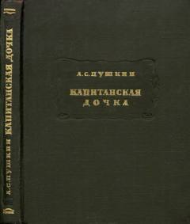

КДPugachev qo'zg'oloni davridagi muhabbat va sadoqat haqidagi klassik rus romani.
Ushbu asar Yemelyan Pugachev boshchiligidagi dehqonlar qo'zg'oloni fonida yosh ofitser Pyotr Grinev va kapitan qizi Masha Mironovaning taqdiri haqida hikoya qiladi. Roman rus adabiyotining eng muhim tarixiy asarlaridan biri bo'lib, sharaf, sadoqat va insoniylik mavzularini qamrab oladi.